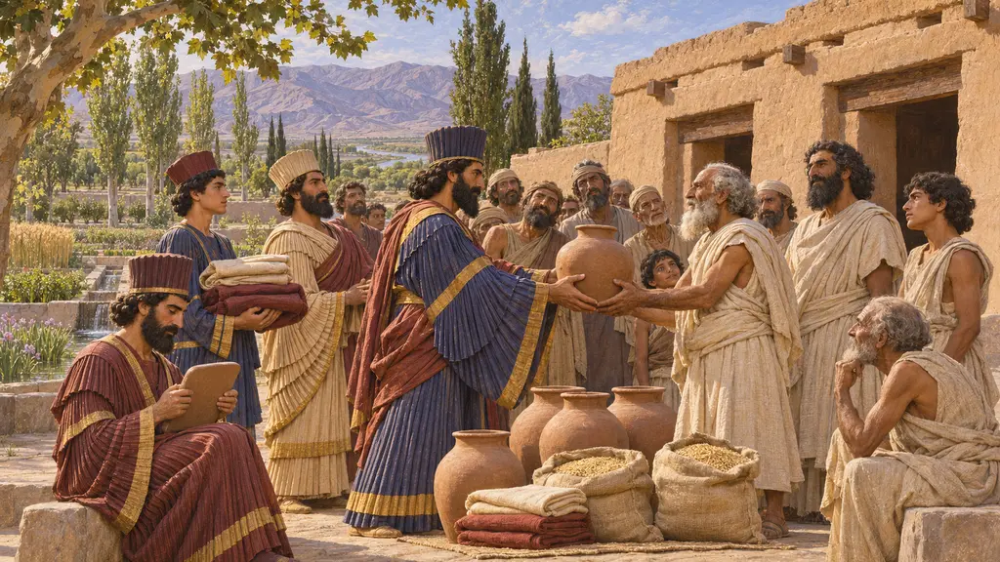
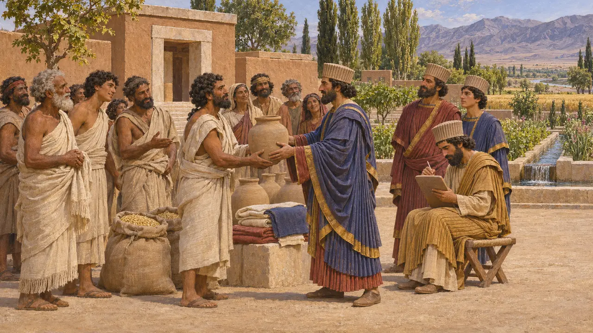
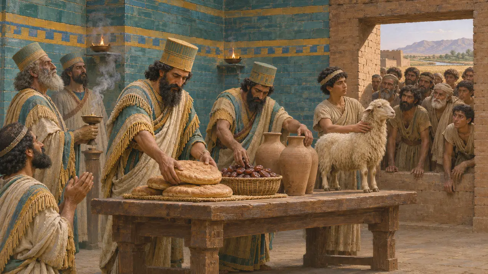

The temple at Jerusalem
A rebuilt temple, in its own people's words
The Book of Ezra has Cyrus send the exiles home to rebuild, and Darius find the order in the archive at Ecbatana and confirm it. The temple was finished in Darius's sixth year, 515 BCE. No Persian document mentions it.
در بازی: It stands in no level, but it happened while your Susa was rising, and it's the best-known case of the policy behind your shrines.

Cyrus's order
روایت باستانیEzra 1 and 6 give two versions of Cyrus's decree. Most historians accept that the temple was rebuilt under Persian sanction, but read the wording as shaped by those who kept it. It fits the Cylinder's return of gods, and it isn't unique to Judah.
Ezra 1, 6; Kuhrt 2007


Elephantine's memory
در اسنادIn 407 BCE the Jewish garrison at Elephantine in Egypt wrote to the governor of Judah after their temple was destroyed. When Cambyses came, they said, he knocked down the temples of Egypt's gods and spared theirs. It is a claim from people with a stake, and it conflicts with the Egyptian record.
TAD A4.7
منابع
- Ezra
- TAD A4.7
- Kuhrt 2007